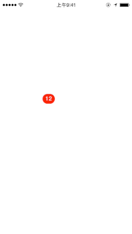

Author: Charles Zhu
Summary: 动画学习
前言
上一篇把动画的实现步骤大致理清，需要确认小尾巴的绘制区域，关键就是确定4个顶点的位置。大家可以根据需要，选择不同的计算方式。
今天，要实现：
- 文字的添加
- 尾巴拉长用弧形代替直线
下面是现在的效果图：

文字添加
为了简单，这里对文字的颜色字体等属性不提供接口，而只是在内部设置固定的值；提供一个类方法生成对象。如：
+ (instancetype)zzspringViewWithText:(NSString *)text;
在这个方法里面需要做：
- 根据text内容，确定文字绘制的图形区域
- 根据文字的绘制区域，确定view对象的bounds
- 可能的情况下，限制文字的长度（QQ上消息数最多显示99+）
在drawRect中，需要做的事：
- 绘制带圆角的view
- 绘制文字
如下所示：
//draw corner round rectangle
-(void) p_drawRoundedRectWithContext:(CGContextRef)context withRect:(CGRect)rect
{
CGContextSaveGState(context);
CGFloat radius = CGRectGetMaxY(rect)*0.4;
CGFloat puffer = CGRectGetMaxY(rect)*0.10;
CGFloat maxX = CGRectGetMaxX(rect) - puffer;
CGFloat maxY = CGRectGetMaxY(rect) - puffer;
CGFloat minX = CGRectGetMinX(rect) + puffer;
CGFloat minY = CGRectGetMinY(rect) + puffer;
CGContextBeginPath(context);
CGContextSetFillColorWithColor(context, [UIColor redColor].CGColor);
CGContextAddArc(context, maxX-radius, minY+radius, radius, M_PI+(M_PI/2), 0, 0);
CGContextAddArc(context, maxX-radius, maxY-radius, radius, 0, M_PI/2, 0);
CGContextAddArc(context, minX+radius, maxY-radius, radius, M_PI/2, M_PI, 0);
CGContextAddArc(context, minX+radius, minY+radius, radius, M_PI, M_PI+M_PI/2, 0);
CGContextFillPath(context);
CGContextRestoreGState(context);
}
-(void) p_drawTextWithContext:(CGContextRef)context
{
NSDictionary *fontAttr = @{
NSFontAttributeName : fontText,
NSForegroundColorAttributeName: [UIColor whiteColor]
};
if (CGSizeEqualToSize(bgTextSize, CGSizeZero))
{
bgTextSize = [self.badgeText sizeWithAttributes:fontAttr];
}
CGPoint textPoint = CGPointMake((rect.size.width/2-bgTextSize.width/2), (rect.size.height/2-bgTextSize.height/2) - 1 );
self.badgeText drawAtPoint:textPoint withAttributes:fontAttr];
}
其中，bgTextSize是之前计算过的文字的size。
弧线
绘制曲线，这里使用CGContextAddQuadCurveToPoint，这里的控制点controlPoint取自两圆心之间的某点(见图)，这里我取了圆心长度的黄金分割点处作为控制点。从实际的运行情况下，可能弧度不是太明显，需要后期再调配参数。
这里还要纠正一下，上一篇计算切点时的方法有误：
{kind=link}
- 三角函数忘记开根号
- 求切点的公式算错了
这里需要说明的是，因为添加了文字，在这里确定P1圆上2个顶点位置的时候，要注意不要覆盖到文字区域，否则移动的时候，文字会被覆盖。
另外，我发现QQ中，拖拽弹回的动画中，小红点上会出现很多纵横交错的白线(bug吗)，估计是用于计算连接点用的。
总结
本身这个动画没有什么技术难度(意思是涉及到的框架内容不实特别复杂)，复杂得是一些关键数值的确定：主要就是拖拽时尾巴的绘制区域的确定。把这一部分解决了，动画也就没有实现的难度了。当然，如果要封装成一个库来调用，还需要再精进：接口的设计，可配置的参数（颜色，字体，阴影等），这些就留给大伙自定义吧 。